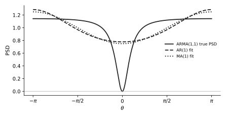

U14 · From a difference equation to r[k] and the PSD#
Before this page
M6 white-noise expectations (only equal-time kicks survive), M7 z-domain (difference equation ↔ \(H(z)\)), M3 rule 2.
The idea in plain words#
The exam hands you the recipe that generates a signal (a difference equation or a filter \(H(z)\) fed with white noise) and asks for the signal's autocorrelation and PSD. Two mechanical routes: for the PSD, take \(|H|^2\) at \(z = e^{j\theta}\) and multiply by the noise variance. For the autocorrelation, multiply the equation by a delayed copy of the signal and take expectations, using that white-noise kicks at different times are uncorrelated.
The thing that confused me
In an ARMA equation like \(x[n] = i[n] - i[n-1] + \frac34x[n-1]\) the past signal \(x[n-1]\) is not independent of the past kick \(i[n-1]\): \(x[n-1]\) contains \(i[n-1]\) with coefficient 1. So \(E[x[n-1]\,i[n-1]] = \sigma_i^2\), not zero. What is zero is \(E[x[n-1]\,i[n]]\): the past cannot know the future kick. Write "coefficient of \(i[n-m]\) inside \(x[n-m]\) is \(b_0 = 1\)" before you start.
A tiny example with numbers#
\(x[n] = i[n] + 2i[n-1]\), \(\sigma_i^2 = 1\) (MA(1)). PSD route: \(H(z) = 1 + 2z^{-1}\), \(P = 1\cdot|1 + 2e^{-j\theta}|^2 = 1 + 4 + 4\cos\theta = 5 + 4\cos\theta\). Autocorrelation route: \(r[0] = E[(i[n]+2i[n-1])^2] = 1 + 4 = 5\); \(r[1] = E[(i[n]+2i[n-1])(i[n-1]+2i[n-2])] = 2\); \(r[2] = 0\). Correlogram: \(5 + 4\cos\theta\). Same answer, as it must be.
Your turn
\(x[n] = i[n] - \frac12 i[n-1]\), \(\sigma_i^2 = 4\). Find \(r[0]\), \(r[1]\) and the PSD by both routes.
Answer
\(r[0] = 4(1 + \frac14) = 5\), \(r[1] = 4(-\frac12) = -2\). PSD \(= 4|1 - \frac12e^{-j\theta}|^2 = 4(1 + \frac14 - \cos\theta) = 5 - 4\cos\theta = r[0] + 2r[1]\cos\theta\). ✓
The formulas, every symbol named#
Difference equation \(x[n] = \sum_{k=0}^{q}b_ki[n-k] - \sum_{k=1}^{p}a_kx[n-k]\) \(\;\Leftrightarrow\;\) \(H(z) = \dfrac{\sum_k b_kz^{-k}}{1 + \sum_k a_kz^{-k}}\), \(b_0 = 1\)
PSD: \(P_x(e^{j\theta}) = \sigma_i^2\,|H(e^{j\theta})|^2 = \sigma_i^2\dfrac{|1 + b_1e^{-j\theta} + \ldots|^2}{|1 + a_1e^{-j\theta} + \ldots|^2}\)
Autocorrelation: \(r[m] = E[x[n]\,x[n-m]]\), computed by multiplying the equation by \(x[n-m]\) and using \(E[i[n]\,i[n-k]] = \sigma_i^2\delta[k]\), \(E[i[n]\,x[n-m]] = 0\) for \(m\ge1\), \(E[i[n-m]\,x[n-m]] = \sigma_i^2\)
| Model | Name | How to recognise |
|---|---|---|
| only \(i\) terms on the right | MA(\(q\)), \(q\) = oldest kick | finite autocorrelation (lags \(0..q\)) |
| \(i[n]\) plus past \(x\) terms | AR(\(p\)), \(p\) = oldest \(x\) | \(r[m]\) decays geometrically forever |
| both past \(i\) and past \(x\) | ARMA(\(p,q\)) | first \(q\) lags special, then geometric decay |
Why \(E[i[n]\,x[n-m]] = 0\) for \(m\ge1\). \(x[n-m]\) is built from kicks up to time \(n-m\); the kick \(i[n]\) is later and independent of all of them.
What the exam asks, in its own words#
| IF YOU SEE | It means |
|---|---|
| "which kind of signal model does this signal represent?" | count the oldest \(i\) term and the oldest \(x\) term: MA(\(q\)), AR(\(p\)) or ARMA(\(p,q\)) |
| "calculate the autocorrelation function of \(x[n]\)" (MA) | \(r[k] = \sigma_i^2\sum_m b_mb_{m+k}\): slide the coefficient list over itself |
| "calculate the autocorrelation \(r[\tau]\)" (ARMA) | \(r[0]\) and \(r[1]\) by the multiply-and-expect method (two equations), then \(r[\tau] = -a_1r[\tau-1]\) for \(\tau\ge2\) |
| "calculate the PSD \(P_x(e^{j\theta})\) of \(x[k]\)" | \(\sigma_i^2\lvert H(e^{j\theta})\rvert^2\), numerator and denominator expanded with M3 |
| "generated by filtering innovation \(i[k]\) with the filter \(H(z) = \ldots\)" | first convert \(H(z)\) to the difference equation (M7), then as above |
| "if you could not solve 3a, use the following autocorrelation" | fallback values; use them and say so |
Recipe#
U14 · Model to lags and PSD
- Write the equation and name it (MA/AR/ARMA, orders). If given \(H(z)\), convert: numerator coefficients → \(b_k\) on \(i[n-k]\), denominator \(1 + a_1z^{-1}\) → \(-a_1x[n-1]\) on the right.
- PSD: \(\sigma_i^2|H(e^{j\theta})|^2\); expand \(|1 + ce^{-j\theta}|^2 = 1 + c^2 + 2c\cos\theta\) top and bottom; simplify fractions.
- MA lags: \(r[k] = \sigma_i^2\sum_m b_mb_{m+k}\) for \(k = 0..q\), zero beyond.
- ARMA(1,1) lags (\(x[n] = i[n] + b_1i[n-1] - a_1x[n-1]\)): multiply by \(x[n]\): \(r[0] = \sigma_i^2(1 + b_1^2) - a_1r[1] - a_1b_1\sigma_i^2\cdot\)… do it as in the worked example below: expand \(E[x[n]^2]\) term by term, using \(E[x[n-1]i[n-1]] = \sigma_i^2\). Multiply by \(x[n-1]\): \(r[1] = b_1\sigma_i^2 - a_1r[0]\). Two equations, two unknowns. Then \(r[\tau] = -a_1r[\tau-1]\) for \(\tau\ge2\).
- Check: \(r[0] > 0\), \(|r[1]| < r[0]\), and the correlogram built from your lags should match the PSD of step 2 at \(\theta = 0\) (for MA) or at least have the same shape.
Worked exam question, one step at a time#
November 2022 · 3c + 3d + 3e · 0.15 + 0.35 + 0.5 p
The random signal \(x[k]\) is described by the following difference equation: \(x[k] = i[k] - i[k-1] + \frac34x[k-1]\), with \(i[k]\) the innovation signal (zero mean and \(\sigma_i^2 = \frac78\)).
3c Which kind of process does \(x[k]\) represent? 3d Calculate the power spectral density \(P_x(e^{j\theta})\) of \(x[k]\). 3e Calculate the autocorrelation \(r[\tau]\) of \(x[k]\).
Step 1 · Name it. Past kick \(i[k-1]\) (so \(q = 1\)) and past signal \(x[k-1]\) (so \(p = 1\)): ARMA(1,1). In the course convention \(b_1 = -1\), \(a_1 = -\frac34\) (because \(-a_1x[k-1] = +\frac34x[k-1]\)). \(H(z) = \dfrac{1 - z^{-1}}{1 - \frac34z^{-1}}\).
Now do step 2 yourself: PSD \(= \sigma_i^2|H(e^{j\theta})|^2\), expand numerator and denominator.
Step 2 · PSD. Numerator: \(|1 - e^{-j\theta}|^2 = 1 + 1 - 2\cos\theta = 2 - 2\cos\theta\). Denominator: \(|1 - \frac34e^{-j\theta}|^2 = 1 + \frac{9}{16} - \frac32\cos\theta = \frac{25}{16} - \frac32\cos\theta\).
Multiply top and bottom by 16: \(\frac78\cdot\frac{32 - 32\cos\theta}{25 - 24\cos\theta} = \frac{28(1 - \cos\theta)}{25 - 24\cos\theta}\). At \(\theta = 0\): \(0\) (the zero of \(1 - z^{-1}\) at \(z = 1\) kills DC). At \(\pi\): \(\frac{56}{49} = 1.143\).
Now do step 3 yourself: \(r[0]\). Square the equation, take \(E\), remember \(E[x[k-1]\,i[k-1]] = \sigma_i^2\) and \(E[x[k-1]\,i[k]] = 0\).
Step 3 · \(r[0]\). \(x = i - i_1 + \frac34x_1\) (short names: \(i_1 = i[k-1]\), \(x_1 = x[k-1]\)). Square: \(x^2 = i^2 + i_1^2 + \frac{9}{16}x_1^2 - 2ii_1 + \frac32ix_1 - \frac32i_1x_1\). Expectations: \(E[i^2] = E[i_1^2] = \frac78\); \(E[x_1^2] = r[0]\); \(E[ii_1] = 0\); \(E[ix_1] = 0\) (future kick); \(E[i_1x_1] = \sigma_i^2 = \frac78\) (the coefficient of \(i_1\) inside \(x_1\) is \(b_0 = 1\)).
\(r[0] = \frac78 + \frac78 + \frac{9}{16}r[0] - 0 + 0 - \frac32\cdot\frac78 = \frac{14}{8} - \frac{21}{16} + \frac{9}{16}r[0] = \frac{28 - 21}{16} + \frac{9}{16}r[0] = \frac{7}{16} + \frac{9}{16}r[0]\).
So \(\frac{7}{16}r[0] = \frac{7}{16} \Rightarrow r[0] = 1\).
Now do step 4 yourself: \(r[1] = E[x\,x_1]\).
Step 4 · \(r[1]\). \(E[(i - i_1 + \frac34x_1)x_1] = E[ix_1] - E[i_1x_1] + \frac34E[x_1^2] = 0 - \frac78 + \frac34\cdot1 = -\frac78 + \frac68 = -\frac18\).
Step 5 · \(r[\tau]\) for \(\tau\ge2\). \(E[x\,x_\tau] = E[ix_\tau] - E[i_1x_\tau] + \frac34E[x_1x_\tau]\). For \(\tau\ge2\) both kicks are later than \(x_\tau\), so the first two vanish: \(r[\tau] = \frac34r[\tau-1]\). Hence \(r[2] = -\frac18\cdot\frac34\), \(r[3] = -\frac18(\frac34)^2\), in general \(r[\tau] = -\frac18\left(\frac34\right)^{|\tau|-1}\) for \(|\tau|\ge1\).
Check. \(|r[1]| = \frac18 < r[0] = 1\). The correlogram from lags \(0,\pm1\) is \(1 - \frac14\cos\theta\): \(0.75\) at \(\theta=0\) versus the true \(0\); the ARMA's deep null needs the infinite tail of lags.

Answer
3c: ARMA(1,1). 3d: \(P_x(e^{j\theta}) = 28\dfrac{1-\cos\theta}{25 - 24\cos\theta}\). 3e: \(r[0] = 1\), \(r[\tau] = -\frac18(\frac34)^{|\tau|-1}\) for \(|\tau|\ge1\).
Do it cold · 1 (MA(3), the sliding products)#
April 2024 · 3b + 3c · 0.1 + 0.5 p
A random signal is described by \(x[n] = i[n] - \frac12 i[n-1] + \frac14 i[n-2] - \frac12 i[n-3]\) (\(i[n]\) white, unit variance). 3b Which kind of signal model does this signal represent? 3c Calculate the autocorrelation function of \(x[n]\).
Solution
3b. Only kicks, oldest is \(i[n-3]\): MA(3). Coefficients \([b_0, b_1, b_2, b_3] = [1, -\frac12, \frac14, -\frac12]\).
3c. Slide the list over itself by \(k\) and add products of overlaps (\(\sigma_i^2 = 1\)):
- \(r[0] = 1^2 + (\frac12)^2 + (\frac14)^2 + (\frac12)^2 = 1 + \frac14 + \frac1{16} + \frac14 = \frac{16 + 4 + 1 + 4}{16} = \frac{25}{16}\).
- \(r[1] = b_0b_1 + b_1b_2 + b_2b_3 = (1)(-\frac12) + (-\frac12)(\frac14) + (\frac14)(-\frac12) = -\frac12 - \frac18 - \frac18 = -\frac34\).
- \(r[2] = b_0b_2 + b_1b_3 = \frac14 + (-\frac12)(-\frac12) = \frac14 + \frac14 = \frac12\).
- \(r[3] = b_0b_3 = -\frac12\).
- \(r[k] = 0\) for \(|k|\ge4\); \(r[-k] = r[k]\).
Answer
MA(3); \(r[0] = \frac{25}{16}\), \(r[\pm1] = -\frac34\), \(r[\pm2] = \frac12\), \(r[\pm3] = -\frac12\), zero beyond. (Then U11 gives the correlogram \(\frac{25}{16} - \frac32\cos\theta + \cos2\theta - \cos3\theta\) and U12 the AR(2) fit.)
Do it cold · 2 (filter given as \(H(z)\))#
October 2021 · 3a · 0.75 p
Calculate the autocorrelation function of the random signal \(x[k]\) generated by filtering innovation \(i[k]\) (white, zero mean, \(\sigma_i^2 = 1\)) with the filter \(H(z) = \dfrac{1 - \frac23z^{-1}}{1 - \frac12z^{-1}}\).
Solution
Step 1. \(X(z)(1 - \frac12z^{-1}) = I(z)(1 - \frac23z^{-1})\), so \(x[k] = i[k] - \frac23i[k-1] + \frac12x[k-1]\): ARMA(1,1).
\(r[0]\). Square and take \(E\): \(r[0] = 1 + \frac49 + \frac14r[0] + 2\cdot\frac12\left(E[ix_1] - \frac23E[i_1x_1]\right) = \frac{13}{9} + \frac14r[0] + (0 - \frac23\cdot1)\). So \(\frac34r[0] = \frac{13}{9} - \frac69 = \frac79 \Rightarrow r[0] = \frac{7}{9}\cdot\frac43 = \frac{28}{27}\).
\(r[1]\). \(E[(i - \frac23i_1 + \frac12x_1)x_1] = 0 - \frac23 + \frac12\cdot\frac{28}{27} = -\frac{18}{27} + \frac{14}{27} = -\frac{4}{27}\).
Tail. \(r[\tau] = \frac12r[\tau-1]\) for \(\tau\ge2\): \(r[\tau] = -\frac{4}{27}\left(\frac12\right)^{|\tau|-1}\).
(The review deck also shows a second route via the general Yule–Walker formula with \(h[1] = -\frac16\) from polynomial division of \(H(z)\); same numbers.)
Answer
\(r[0] = \frac{28}{27}\), \(r[\pm1] = -\frac4{27}\), \(r[\tau] = (\frac12)^{|\tau|-1}r[1]\) for \(|\tau|\ge2\). PSD: \(P = \dfrac{|1 - \frac23e^{-j\theta}|^2}{|1 - \frac12e^{-j\theta}|^2} = \dfrac{\frac{13}{9} - \frac43\cos\theta}{\frac54 - \cos\theta}\).
Do it cold · 3 (AR(1) closed form, used by the Wiener aside and by sanity checks)#
AR(1): \(x[n] = i[n] + \alpha x[n-1]\), variance \(\sigma_i^2\). Find \(r[0]\) and \(r[k]\).
Multiply by \(x[n]\): \(r[0] = \sigma_i^2 + \alpha r[1]\). Multiply by \(x[n-1]\): \(r[1] = \alpha r[0]\). Combine.
Answer
\(r[0] = \sigma_i^2 + \alpha^2r[0] \Rightarrow r[0] = \dfrac{\sigma_i^2}{1 - \alpha^2}\), and \(r[k] = \alpha^{|k|}r[0]\). Example Jan 2019: \(\alpha = \frac12\), \(\sigma_i^2 = \frac14\): \(r[0] = \frac{1/4}{3/4} = \frac13\), \(r[1] = \frac16\).
Where points get lost#
Where points get lost
| Wrong line | Right line |
|---|---|
| \(E[x[k-1]\,i[k-1]] = 0\) | \(= \sigma_i^2\): the past signal contains the past kick with coefficient 1. Only future kicks are uncorrelated with the past signal. |
| \(r[1]\) for MA(3) \(= b_1 = -\frac12\) | \(r[1] = b_0b_1 + b_1b_2 + b_2b_3\): all overlapping pairs. |
| $ | 1 - e^{-j\theta} |
| Calling \(x = i - i_1 + \frac34x_1\) an AR(1) | A past kick is present: ARMA(1,1). (Officially 0.15 p for the name.) |
| PSD \(= \sigma_i^2H(e^{j\theta})\) | Squared magnitude: \(\sigma_i^2\lvert H(e^{j\theta})\rvert^2\). |
| Forgetting \(\sigma_i^2 = \frac78\) in \(r[0]\) | Every \(E[i^2]\) is \(\sigma_i^2\), not 1, unless the question says unit variance. |
True or false (from real MC options)#
| statement | T or F | why |
|---|---|---|
| The PSD of the output of a stable LTI filter driven by white noise of variance \(\sigma_i^2\) is \(\sigma_i^2\lvert H(e^{j\theta})\rvert^2\). | True | Definition used in Nov 2022 3d, Apr 2024 1e. |
| The autocorrelation of an ARMA(1,1) process is zero beyond lag 1. | False | Only MA processes have finite autocorrelation; the AR part gives a geometric tail (\(r[\tau] = \frac34 r[\tau-1]\) in Nov 2022). |
| Each picture of an infinite set of pictures is a realisation of a random process, hence a random signal. | True | Jan 2022 1b (b). (A single pixel's colour is a random variable, not a signal.) |
| White noise has an autocorrelation that is zero at every nonzero lag. | True | \(E[i[n]i[n-k]] = \sigma_i^2\delta[k]\): the fact every derivation on this page uses. |
You can leave this page when you can:
- convert \(H(z)\) to a difference equation and back, and name the model.
- write \(\sigma_i^2|H|^2\) in cosines for a first-order numerator and denominator.
- compute MA lags by sliding products.
- set up the two equations for \(r[0]\), \(r[1]\) of an ARMA(1,1), stating which expectations are \(\sigma_i^2\) and which are \(0\).
- write the geometric tail \(r[\tau] = -a_1r[\tau-1]\).